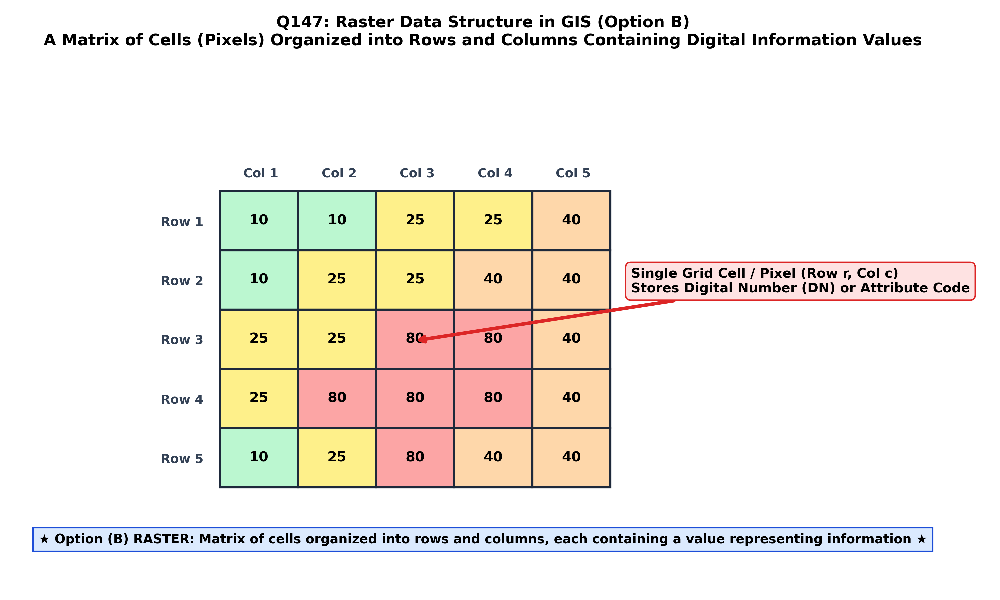

In Geographic Information Systems (GIS), digital cartography, and digital image processing, spatial reality is encoded in computers using two primary data models: the Vector Data Model (which represents features as explicit discrete points, lines, and polygons using coordinate lists) and the Raster Data Model.
By formal GIS definition (Chang; Burrough & McDonnell; Bangar), a matrix of cells organized into regular rows and columns containing a value representing some information is called a Raster (Option B):
| Raster Architecture Component | Mathematical / Structural Property | Function in GIS Spatial Modeling |
|---|---|---|
| Matrix of Cells (Grid / Pixels) | Regular orthogonal tessellation of identical rectangular or square cells. | Exhaustively tiles the entire geographic bounding extent without any gaps or overlaps. |
| Row and Column Coordinates ($i, j$) | Integer matrix indices starting at $(0, 0)$ from the Upper-Left corner. | Implicit spatial position; physical ground coordinates are computed via affine georeferencing: $X = X_0 + j \cdot \Delta x$, $Y = Y_0 - i \cdot \Delta y$. |
| Cell Dimension (Spatial Resolution) | Length of a cell side on the ground ($\Delta x = \Delta y$, e.g. $30\text{ m}$). | Determines the minimum spatial resolving power; cell area $= (\Delta x)^2$. |
| Cell Attribute Value ($Z$) | Integer (nominal/discrete) or Floating-Point (continuous scalar). | Stores the physical parameter: elevation (m), spectral radiance, NDVI, soil category, or rock unit code. |

By international GIScience and computer graphics definitions (Chang, Ch. 4; Burrough & McDonnell; Bangar, p. 216), a Raster (or raster grid) is defined precisely as a cellular matrix organized into a regular grid of rows and columns, where each individual grid cell contains an explicit numerical or categorical value representing geographic phenomena.
A crystal is an ordered solid-state mineral structure with periodic atomic repetition (crystallography). It is not a GIS data model.
In vector data structures, a segment is a straight line segment connecting two sequential coordinate vertices along an arc. It is a linear 1D vector entity, not a 2D matrix of cells.
A polygon is a vector geometry defined by a closed sequence of coordinate pairs $(x_1, y_1), \dots, (x_n, y_n)$ enclosing an area. It does not consist of a matrix of rows and columns.
| Evaluation Parameter | Raster Data Model (Option B) | Vector Data Model (Points, Lines, Polygons) |
|---|---|---|
| Spatial Representation | Regular matrix of square cells (Pixels) | Explicit $(X, Y)$ coordinate pairs and nodes |
| Best Suited Phenomena | Continuous fields (DEM, temperature, satellite imagery) | Discrete entities with sharp boundaries (parcels, roads) |
| Data Storage Requirements | Large file sizes; scales with spatial resolution ($\propto 1/\Delta x^2$) | Compact file sizes; scales with feature complexity |
| Spatial Analysis Strengths | Rapid cell-by-cell Map Algebra, overlay, surface modeling | Network routing, topological connectivity, precise boundary cadastral calculation |
| Geometric Accuracy & Scale Change | Subject to pixelation and staircase boundary effects if enlarged | Resolution-independent; scales smoothly without jagged steps |
| Standard File Formats | GeoTIFF, Esri Grid, IMG, NetCDF, HDF, DEM | Shapefile, GeoJSON, File Geodatabase, KML, DXF |
.tfw, .jgw)?5, 5, 5, 5, 5, 2, 2 compresses into (5, 5), (2, 2), drastically reducing storage for categorical maps.